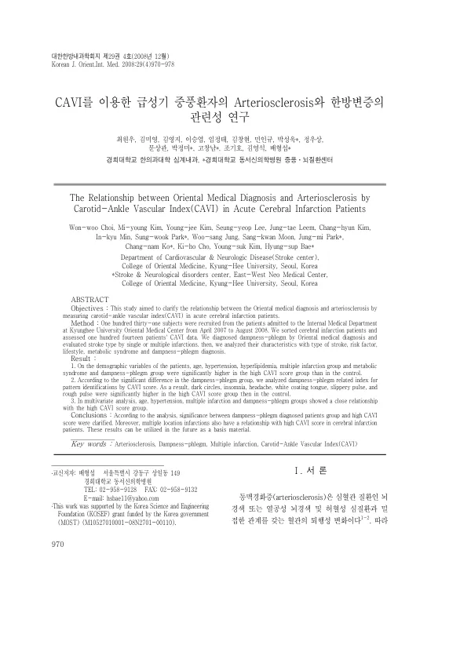

CAVI를 이용한 급성기 중풍환자의 Arteriosclerosis와 한방변증의 관련성 연구
Choi Ww, Kim My, Kim Yj, Lee Sy, Leem Jt, Kim Ch, Min Ik, Park Sw, Jung Ws, Moon Sk, Park Jm, Ko Cn, Cho Kh, Kim Ys, Bae Hs
The Journal of Internal Korean Medicine 29(4):970-978

첫 장 · 오픈액세스First page · open access
논문 소개Summary
동맥경화의 정도를 재는 심장발목혈관지수와 한의 변증이 어떤 관계인지 살핀 연구입니다. 2007년 4월부터 이듬해 8월까지 경희대학교한방병원에 입원한 131명 가운데 뇌경색 환자를 추려 114명의 자료를 분석했습니다. 지수가 높은 군은 대조군보다 나이와 고혈압, 고지혈증, 다발성 경색, 대사증후군, 습담 변증군의 비율이 유의하게 높았습니다. 습담과 관련된 지표를 따로 보니 다크서클과 불면, 두통, 백태, 활맥, 삽맥이 지수가 높은 군에서 유의하게 많았습니다. 다변량 분석에서는 나이와 고혈압, 다발성 경색, 습담군이 높은 지수와 관련이 있었습니다. 단면 연구이므로 습담이 동맥경화를 일으킨다고 읽을 수는 없습니다.
A study of the relationship between the cardio-ankle vascular index, a measure of arteriosclerosis, and Korean medicine pattern identification. Of 131 patients admitted to Kyung Hee University Korean Medicine Hospital between April 2007 and August 2008, those with cerebral infarction were selected and index data analysed for 114. The high-index group had significantly higher rates of older age, hypertension, hyperlipidaemia, multiple infarction, metabolic syndrome and the dampness-phlegm pattern than controls. Examining dampness-phlegm indicators separately, dark circles, insomnia, headache, white tongue coating, slippery pulse and rough pulse were significantly more frequent in the high-index group. In multivariate analysis, age, hypertension, multiple infarction and the dampness-phlegm group were associated with a high index. Being cross-sectional, the study cannot be read as showing that dampness-phlegm causes arteriosclerosis.
인용Cite
Choi Ww, Kim My, Kim Yj, Lee Sy, Leem Jt, Kim Ch, Min Ik, Park Sw, Jung Ws, Moon Sk, Park Jm, Ko Cn, Cho Kh, Kim Ys, Bae Hs. CAVI를 이용한 급성기 중풍환자의 Arteriosclerosis와 한방변증의 관련성 연구. The Journal of Internal Korean Medicine. 2008;29(4):970-978.